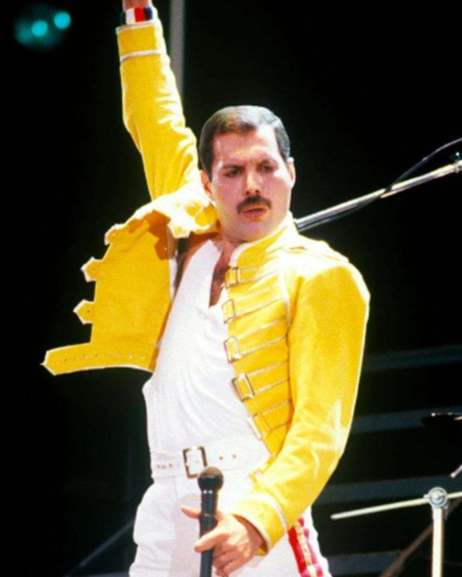
Freddie Mercury
Wembley 86: campera amarilla con hebillas, pantalón blanco y bigote.
Campera amarilla, pantalón blanco con franja roja y bigote pintado.
Cantá: We Will Rock You
Producción total
Dresscode: cantante.
¿No sabés de quién ir? Acá hay 76 ideas para armar el look y subirte a cantar su tema.
La noche del 9 de noviembre
41 temas en una noche, en el orden en que sonaron.
Los 6 temas con toda la banda no suman acá.
Para inspirarse
76 cantantes para armar el disfraz, del que se arma con lo que hay en casa a la producción total.
No hay looks con esos filtros. Probá sacando alguno.

Wembley 86: campera amarilla con hebillas, pantalón blanco y bigote.
Campera amarilla, pantalón blanco con franja roja y bigote pintado.
Cantá: We Will Rock You
Producción total
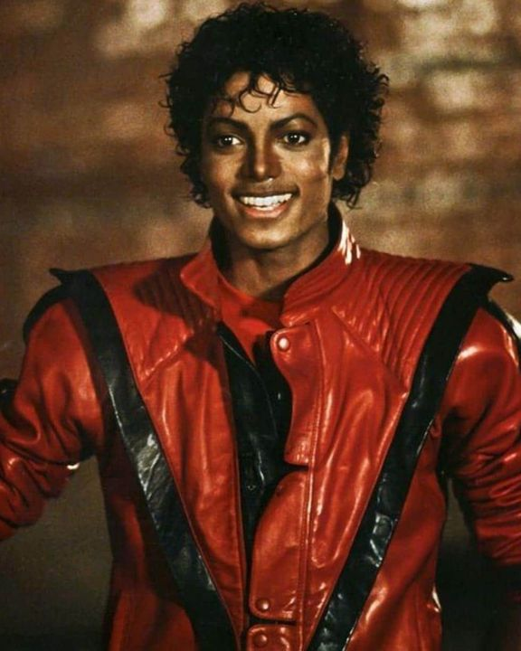
La campera roja de Thriller.
Campera roja con franjas negras, pantalón rojo y rulos.
Cantá: Thriller
Comprando un par de cosas
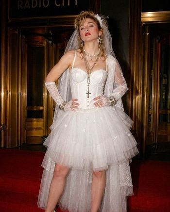
Like a Virgin: vestido de novia, velo y crucifijo.
Vestido blanco con tul, velo, guantes de encaje y crucifijo.
Cantá: Like a Virgin
Comprando un par de cosas
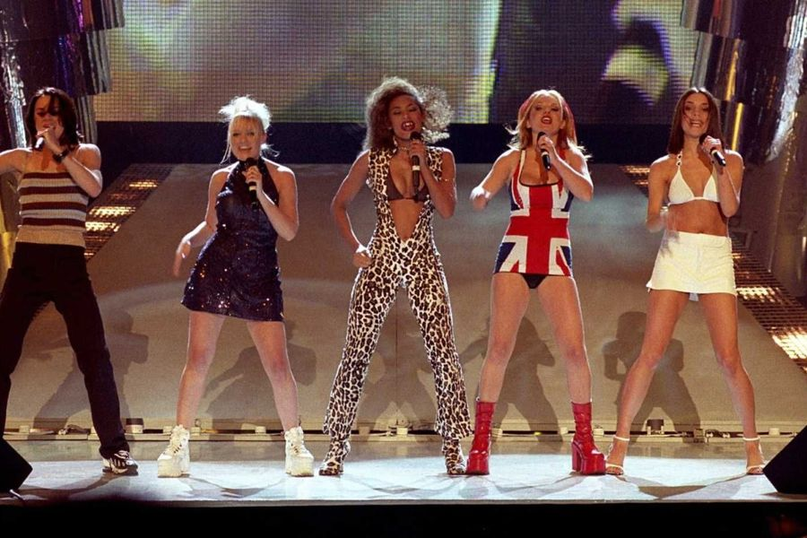
El vestido de la bandera inglesa y una Spice por persona. Para ir en grupo.
Elijan una Spice cada una: bandera, plataformas, buzo deportivo, colitas o todo negro.
Cantá: Wannabe
Comprando un par de cosas
Boina, barba, chaleco oscuro, camisa blanca y pañuelo al cuello.
Boina, chaleco, camisa blanca, pañuelo y barba pintada si no tenés.
Cantá: La Bilirrubina
Con lo que tenés en casa
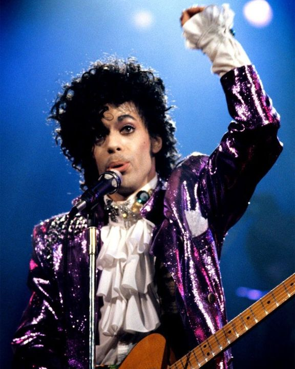
Purple Rain: saco violeta brillante, camisa con volados y rulos.
Saco violeta, camisa blanca con volados y delineador.
Cantá: Purple Rain
Comprando un par de cosas
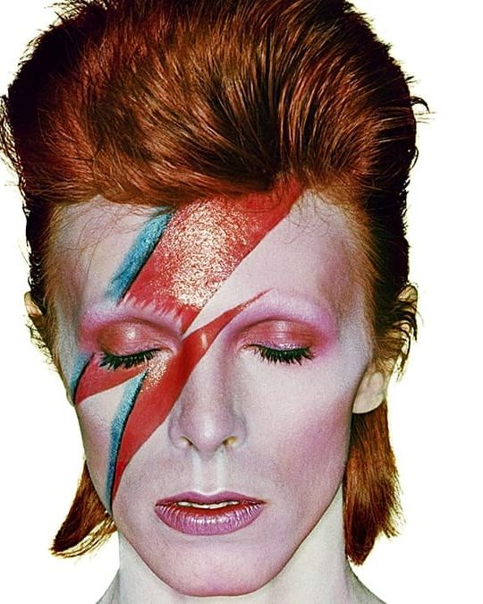
Aladdin Sane: el rayo rojo y azul sobre la cara.
Rayo pintado en la cara y pelo naranja. Con eso alcanza.
Cantá: Starman
Con lo que tenés en casa
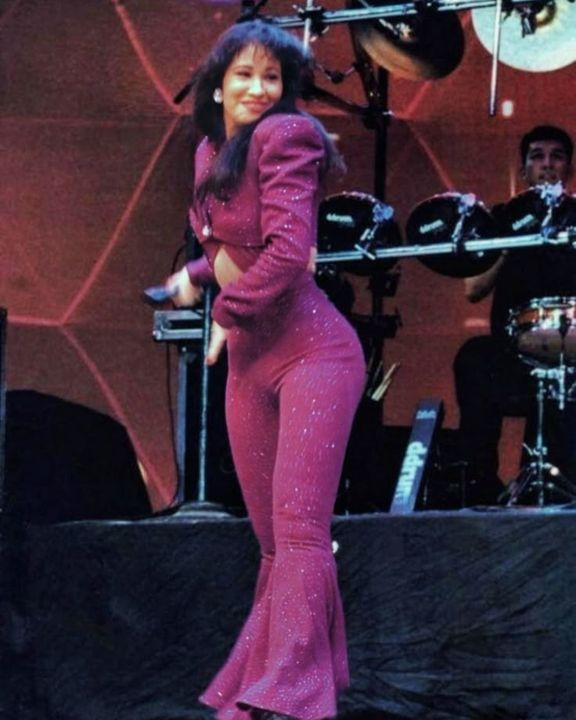
El mono violeta brillante de 1995: ombligo al aire y pantalón oxford.
Top y pantalón oxford violetas con brillos, pelo negro y labios rojos.
Cantá: Como la Flor
Comprando un par de cosas
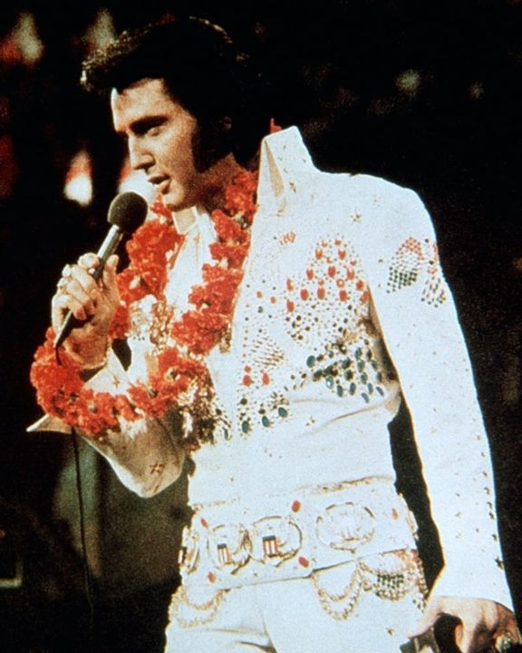
Enterito blanco con pedrería, cuello alto y jopo.
Mono blanco, cinturón grande, collar de flores y mucho gel.
Cantá: Suspicious Minds
Producción total
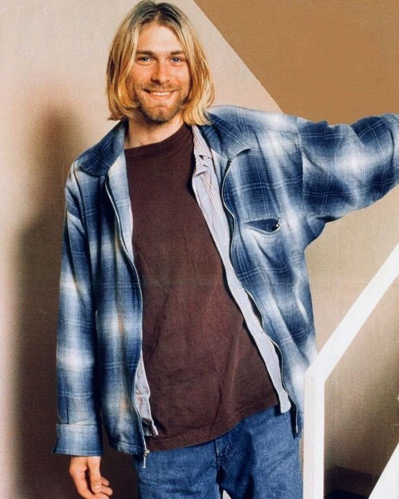
Camisa escocesa abierta sobre remera, jean gastado. Grunge puro.
Camisa escocesa, remera vieja, jean roto y pelo rubio despeinado.
Cantá: Smells Like Teen Spirit
Con lo que tenés en casa
Jay Kay: sombrero gigante de peluche, polar azul y barbita.
Sombrero alto y peludo, polar azul con cierre y barba pintada si no tenés.
Cantá: Virtual Insanity
Comprando un par de cosas
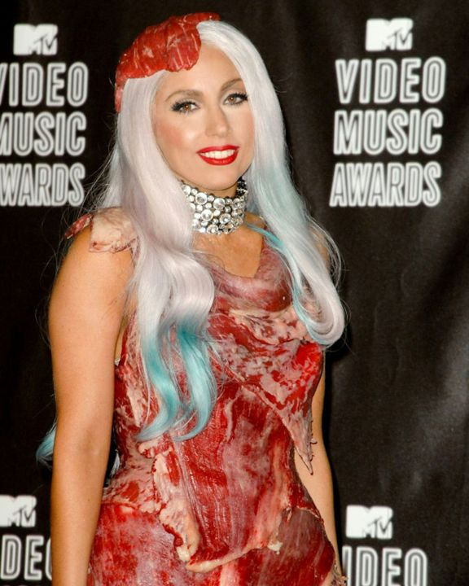
El vestido de carne de 2010.
Vestido hecho con papel o tela que imite carne, y peluca platinada.
Cantá: Poker Face
Producción total
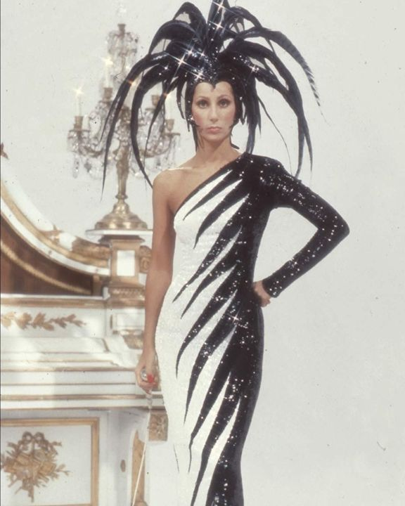
Bob Mackie: vestido blanco y negro, tocado de plumas gigante.
Vestido largo ajustado, plumas en la cabeza y pelo negro lacio.
Cantá: Believe
Producción total
Traje oscuro impecable, corbata, jopo y bronceado.
Traje oscuro, corbata, gel en el pelo y autobronceante sin culpa.
Cantá: La Incondicional
Con lo que tenés en casa
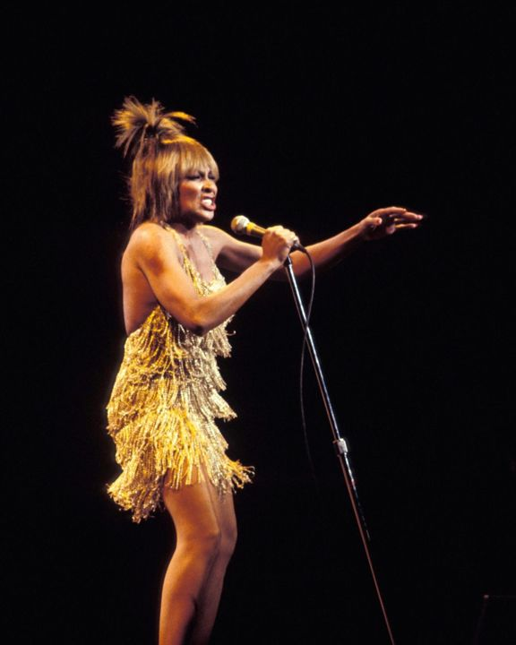
Minivestido de flecos dorados, melena despeinada y tacos.
Vestido con flecos, peluca bien batida y tacos para bailar toda la noche.
Cantá: Proud Mary
Comprando un par de cosas
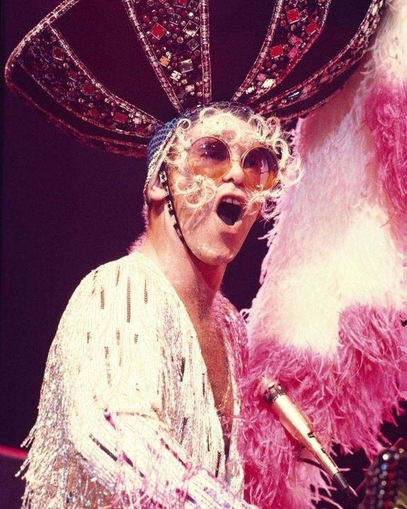
Plumas, lentejuelas, un tocado enorme y anteojos gigantes.
Anteojos enormes, boa de plumas y todo el brillo que encuentres.
Cantá: I'm Still Standing
Comprando un par de cosas
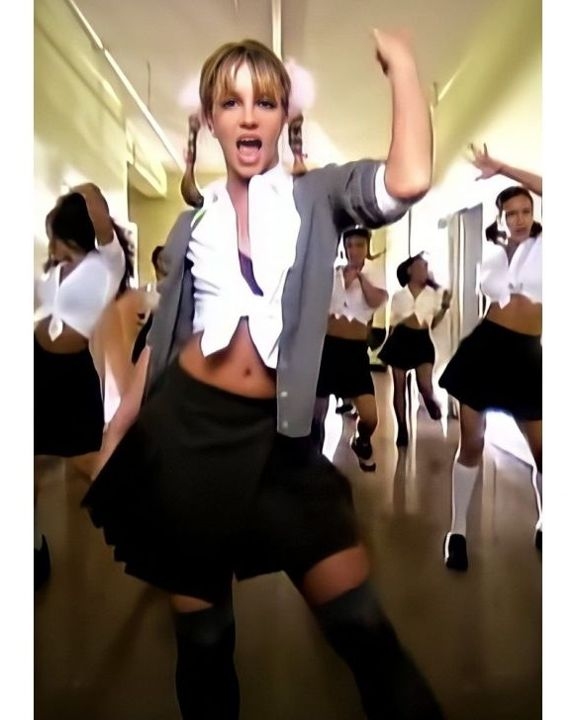
Baby One More Time: uniforme de colegio con camisa atada y colitas.
Camisa blanca atada, pollera tableada, medias largas y dos colitas.
Cantá: ...Baby One More Time
Con lo que tenés en casa
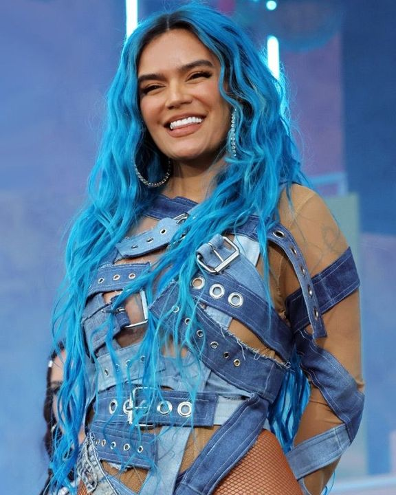
Pelo azul larguísimo y conjunto de tiras de jean.
Peluca azul larga, top y short de jean, y todas las tiras que se te ocurran.
Cantá: Tusa
Comprando un par de cosas
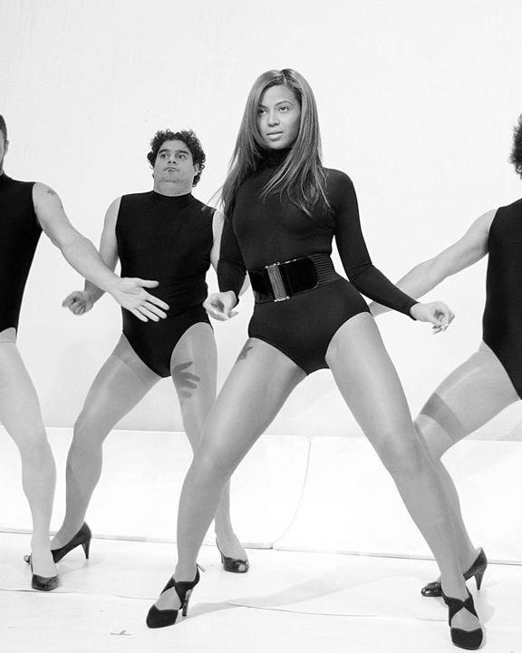
Single Ladies: body negro de manga larga y tacos.
Body negro, tacos y un guante metálico. Mejor con dos amigas.
Cantá: Single Ladies
Con lo que tenés en casa
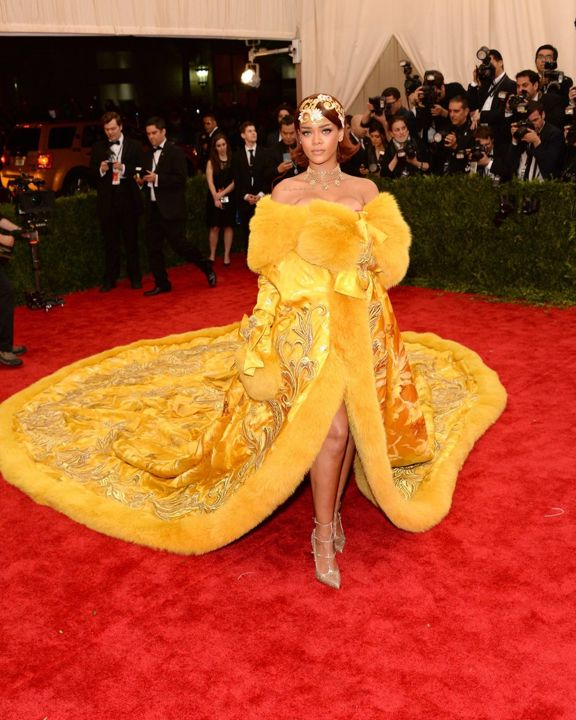
La capa amarilla gigante de la Met Gala 2015.
Tapado o tela amarilla enorme que arrastre. Cuanto más metros, mejor.
Cantá: Umbrella
Producción total
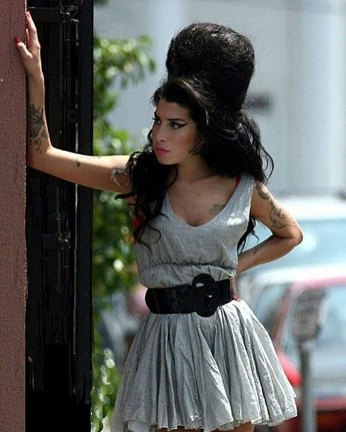
Batido negro altísimo, delineado marcado y vestido de los 50.
Rodete alto con mucho volumen, delineador grueso y vestido con cinturón.
Cantá: Back to Black
Con lo que tenés en casa
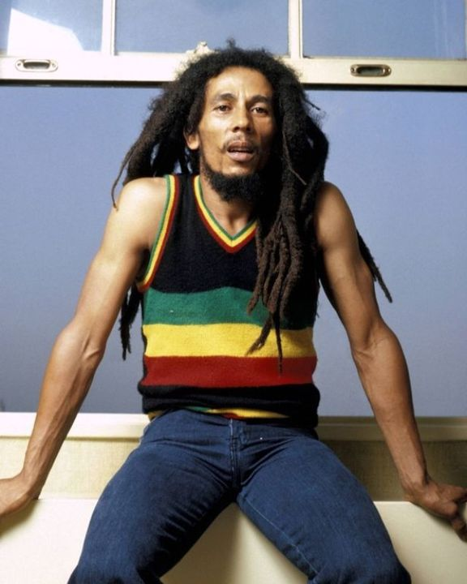
Rastas, jean y musculosa rasta.
Musculosa roja, amarilla y verde, jean y gorro con rastas.
Cantá: No Woman, No Cry
Con lo que tenés en casa
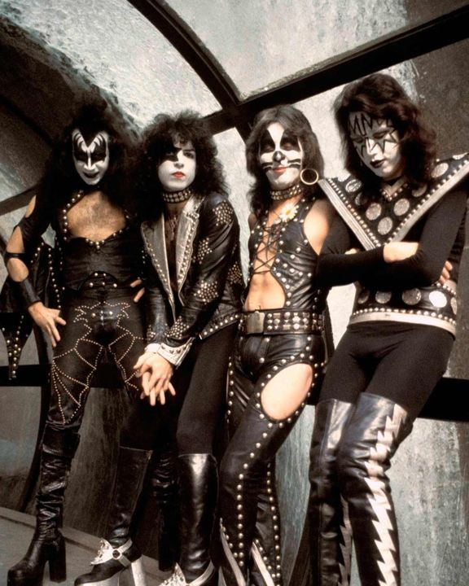
Cara pintada, cuero negro y plataformas. Para ir en banda.
Maquillaje blanco y negro, ropa negra y lo más alto que tengas en los pies.
Cantá: I Was Made for Lovin' You
Comprando un par de cosas
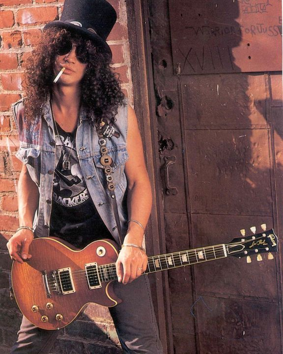
Galera, rulos negros y chaleco de jean.
Galera, peluca de rulos, chaleco, remera de banda y lentes oscuros.
Cantá: Sweet Child O' Mine
Comprando un par de cosas
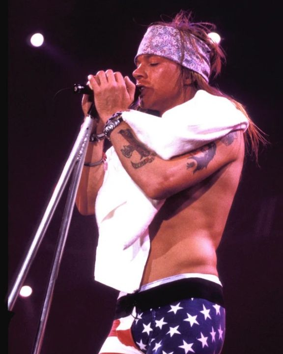
Bandana, musculosa y short de la bandera.
Bandana, pelo largo, short llamativo y botas.
Cantá: Welcome to the Jungle
Con lo que tenés en casa
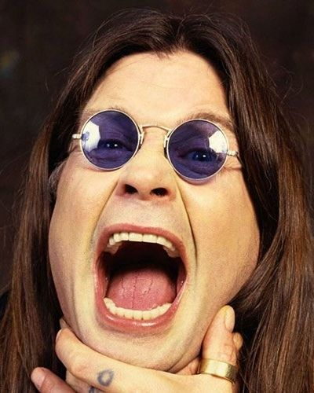
Anteojos redondos de color, pelo largo y mucho negro.
Lentes redondos, peluca oscura lisa, ropa negra y cruz grande.
Cantá: Crazy Train
Con lo que tenés en casa
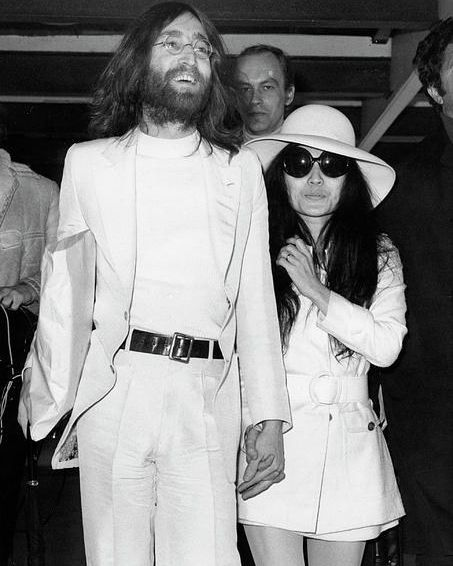
Todo de blanco y el sombrero de ala ancha. Para ir en pareja.
Traje blanco y anteojos redondos; para Yoko, sombrero blanco y lentes oscuros.
Cantá: Imagine
Con lo que tenés en casa
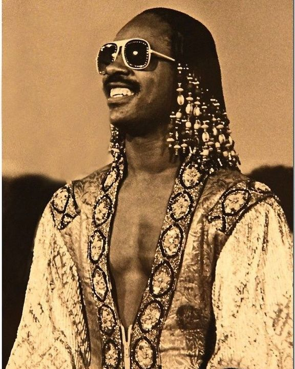
Trencitas con cuentas, anteojos oscuros y sonrisa enorme.
Peluca con trencitas y cuentas, lentes de aviador y camisa con bordados.
Cantá: Superstition
Comprando un par de cosas
I Wanna Dance with Somebody: rulos, pañuelo con moño y brillo.
Peluca de rulos, pañuelo atado arriba y musculosa brillante.
Cantá: I Wanna Dance with Somebody
Comprando un par de cosas
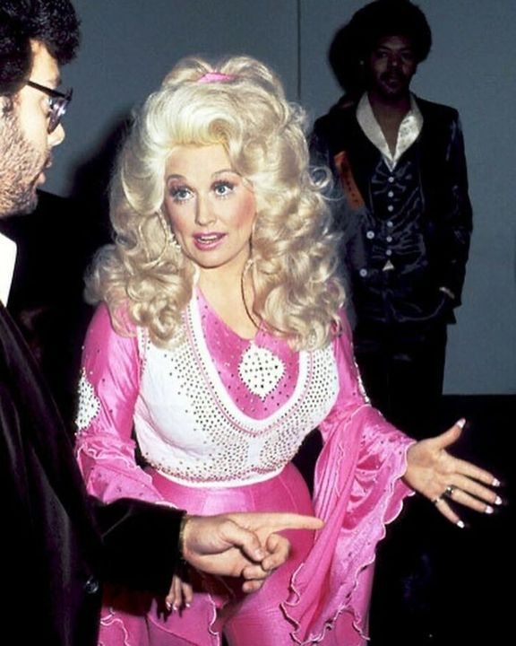
Pelo rubio gigante y conjunto rosa con brillos.
Peluca rubia con todo el volumen posible y ropa country brillante.
Cantá: Jolene
Comprando un par de cosas
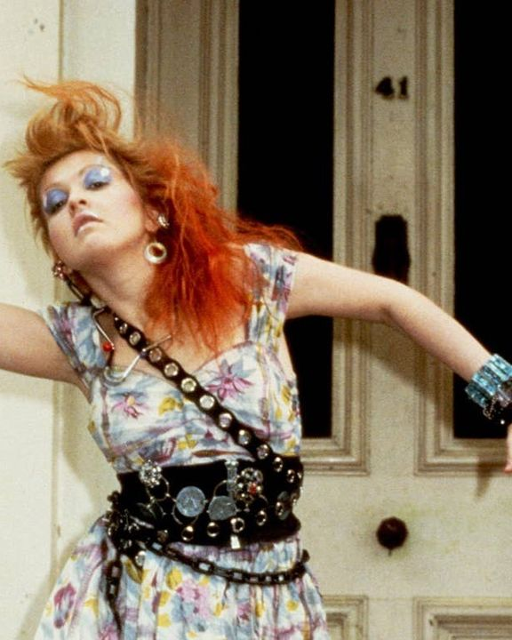
Pelo naranja, vestido estampado, cinturones y pulseras.
Pelo de color, muchos cinturones, pulseras y maquillaje de colores.
Cantá: Girls Just Want to Have Fun
Con lo que tenés en casa
Saco escocés amarillo y boa de plumas violeta.
Saco a cuadros, boa de plumas de color y pantalón oxford.
Cantá: As It Was
Comprando un par de cosas
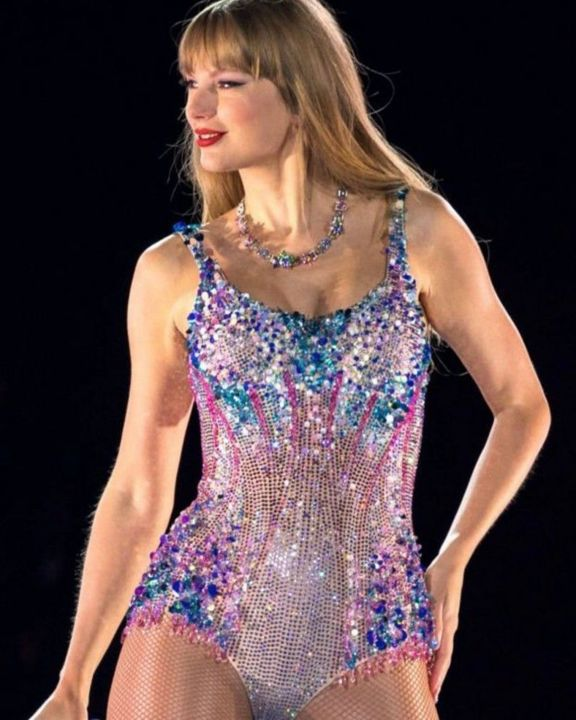
Eras Tour: body de lentejuelas y flequillo.
Body brillante, botas, flequillo y labios rojos.
Cantá: Shake It Off
Comprando un par de cosas
Rulos rubios enormes y brillos dorados.
Peluca de rulos, top dorado y pañuelo con flecos en la cadera.
Cantá: Hips Don't Lie
Comprando un par de cosas
Traje fucsia, anteojos de sol y zapatillas blancas.
Traje de color fuerte, anteojos de sol y zapatillas blancas.
Cantá: Tití Me Preguntó
Comprando un par de cosas
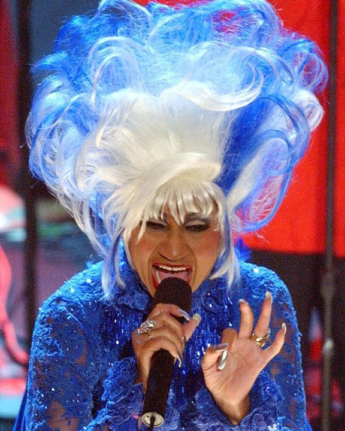
Peluca gigante de colores y vestido de encaje.
Peluca enorme, vestido brillante y gritar ¡Azúcar! cada tanto.
Cantá: La Vida Es un Carnaval
Producción total
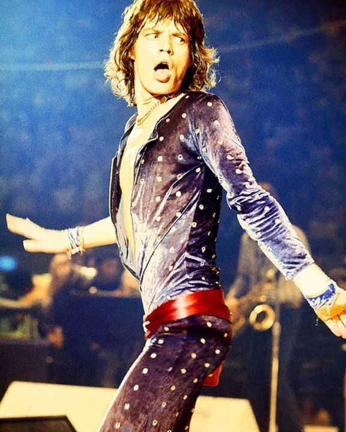
Años 70: enterito de terciopelo con faja roja y pecho abierto.
Enterito o camisa abierta, faja roja y mucho movimiento de cadera.
Cantá: Satisfaction
Comprando un par de cosas
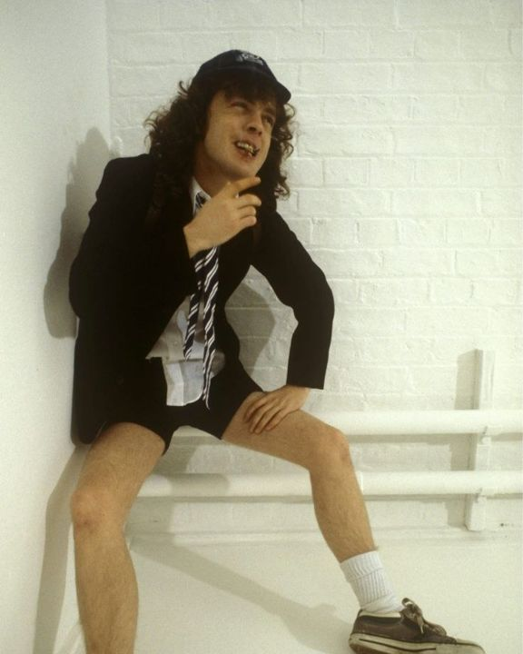
El uniforme de colegio con bermudas.
Saco de colegio, corbata, bermudas, medias largas y guitarra imaginaria.
Cantá: Back in Black
Con lo que tenés en casa
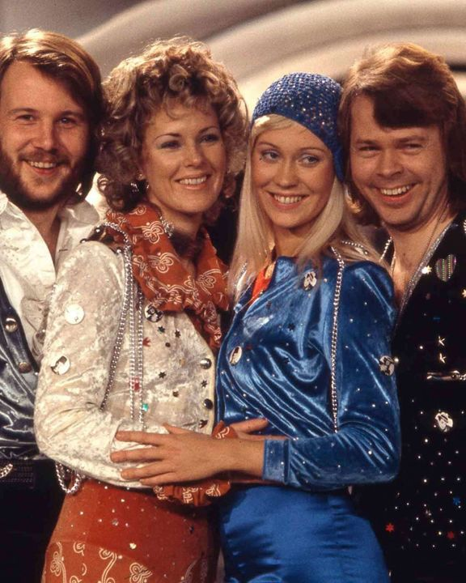
Satén brillante, tachas y pelo con volumen. Para ir de a cuatro.
Enteritos o camisas de satén, botas blancas y mucho brillo.
Cantá: Dancing Queen
Comprando un par de cosas
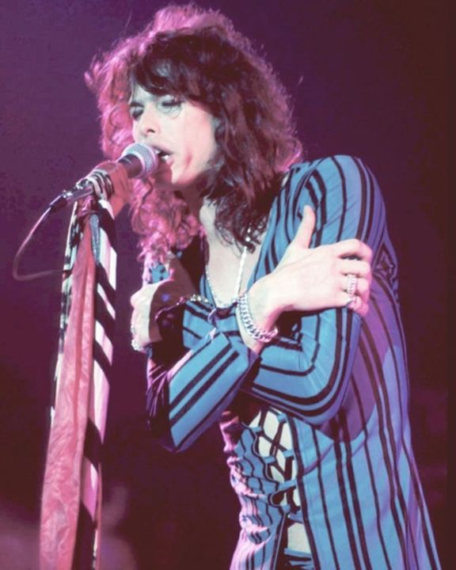
Conjunto a rayas, melena y pañuelos colgando del micrófono.
Ropa a rayas, pelo largo y todos los pañuelos que encuentres.
Cantá: Dream On
Con lo que tenés en casa
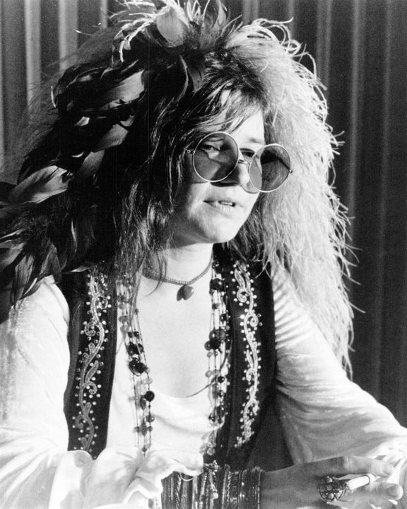
Plumas en el pelo, collares y anteojos redondos.
Plumas, muchos collares, chaleco hippie y anteojos de marco fino.
Cantá: Piece of My Heart
Con lo que tenés en casa
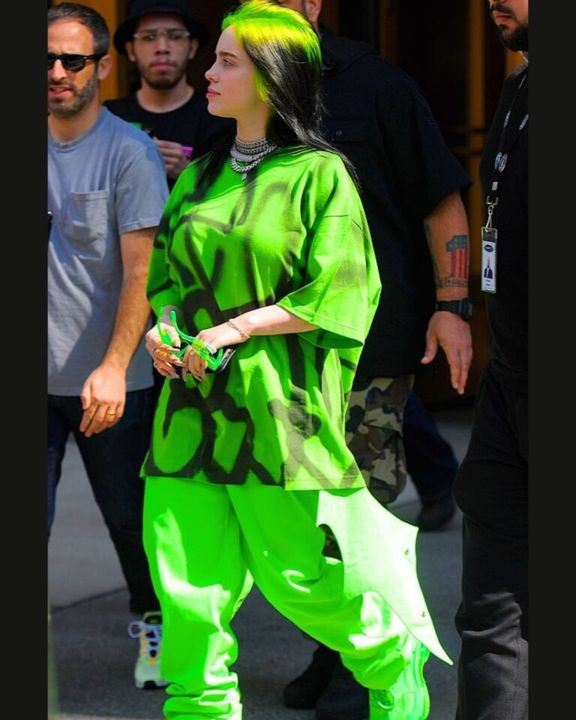
Ropa XXL verde flúor y raíces verdes.
Buzo y pantalón gigantes de color flúor, y mechas verdes.
Cantá: Bad Guy
Con lo que tenés en casa
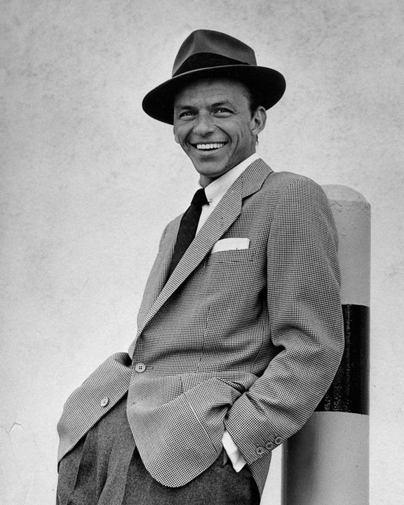
Traje, corbata fina y sombrero.
Traje, sombrero y un vaso en la mano.
Cantá: My Way
Con lo que tenés en casa
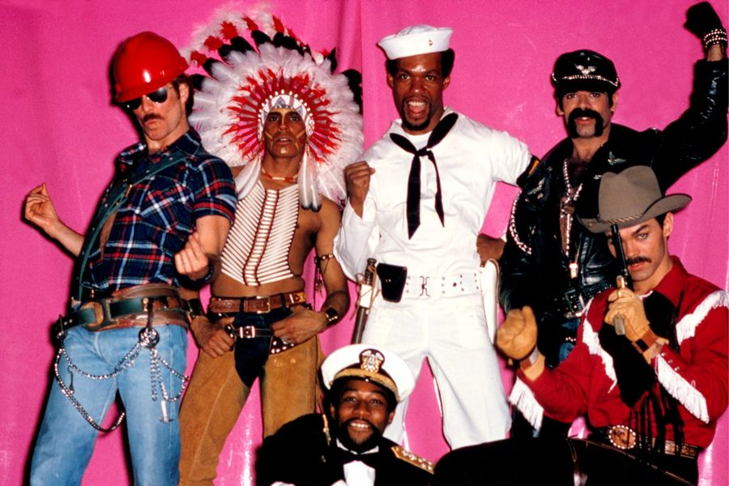
Vaquero, obrero, policía, marinero. Para ir en grupo.
Cada uno elige un personaje y arman la coreo.
Cantá: Y.M.C.A.
Comprando un par de cosas
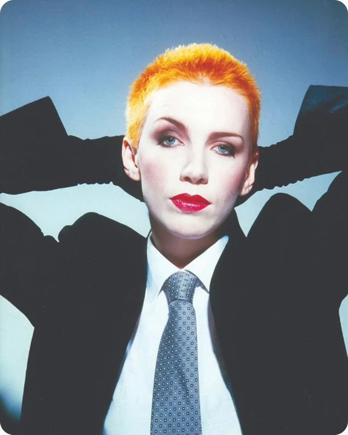
Sweet Dreams: traje con corbata y pelo corto naranja.
Traje con corbata, gel y pelo naranja corto.
Cantá: Sweet Dreams
Con lo que tenés en casa
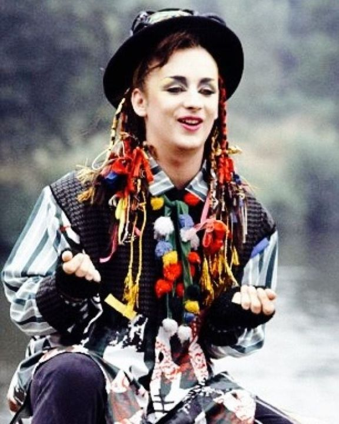
Sombrero, trenzas con cintas y maquillaje marcado.
Sombrero, trenzas con cintas de colores y ropa holgada estampada.
Cantá: Karma Chameleon
Comprando un par de cosas
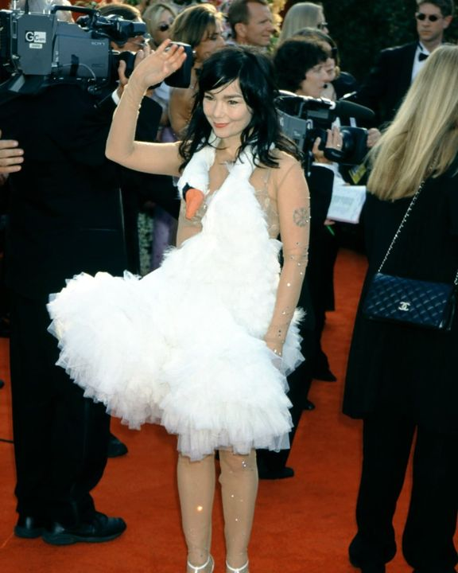
El vestido de cisne de los Oscar 2001.
Vestido blanco de tul con un cisne de peluche al cuello.
Cantá: It's Oh So Quiet
Producción total
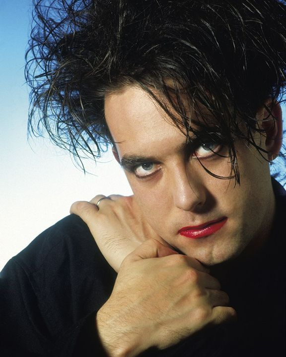
Pelo negro batido y labial corrido.
Peluca negra despeinada, labial rojo corrido, delineador y ropa negra.
Cantá: Friday I'm in Love
Con lo que tenés en casa
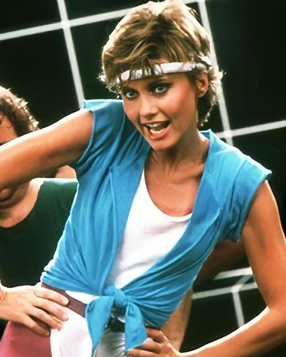
Physical: vincha, musculosa y pelo corto.
Vincha, remera atada a la cintura y calzas de colores.
Cantá: Physical
Con lo que tenés en casa
La peluca que tapa la cara y el moño gigante.
Peluca bicolor sobre la cara y moño enorme.
Cantá: Chandelier
Comprando un par de cosas
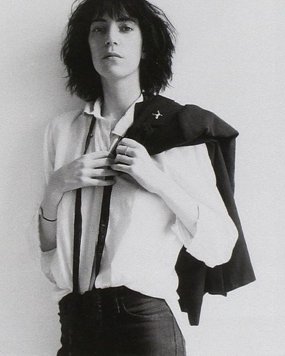
Horses: camisa blanca, cinta negra de corbata y saco al hombro.
Camisa blanca, corbata finita, saco colgado del hombro y pelo revuelto.
Cantá: Because the Night
Con lo que tenés en casa
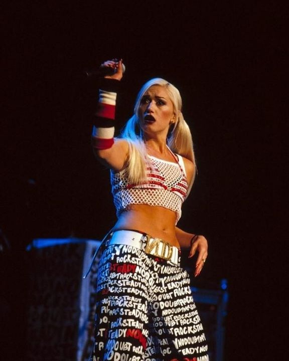
No Doubt: top corto, pantalón estampado y rubio platinado.
Top corto, pantalón llamativo, labios rojos y rubio.
Cantá: Don't Speak
Con lo que tenés en casa
Livin' la Vida Loca: camisa negra y cadera suelta.
Camisa negra abierta, pantalón oscuro y un buen meneo.
Cantá: Livin' la Vida Loca
Con lo que tenés en casa
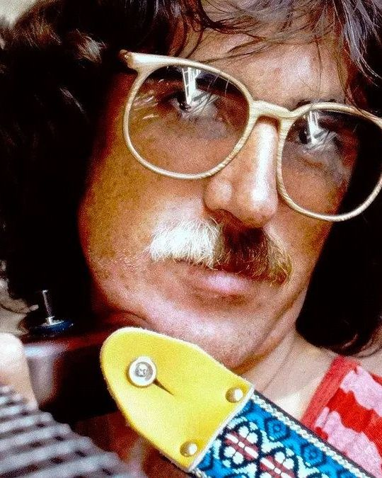
El bigote bicolor y anteojos de marco grueso.
Bigote pintado mitad blanco, anteojos grandes y camisa a rayas.
Cantá: Demoliendo Hoteles
Con lo que tenés en casa
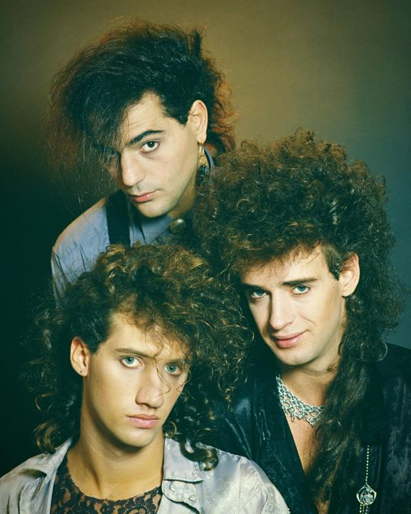
Años 80: pelo batido, camisas estampadas y delineador. Para ir de a tres.
Camisa estampada, mucho spray en el pelo y delineador.
Cantá: De Música Ligera
Con lo que tenés en casa
Melena con rulos y camisa abierta.
Peluca de rulos larga y camisa clara.
Cantá: Muchacha (Ojos de Papel)
Con lo que tenés en casa
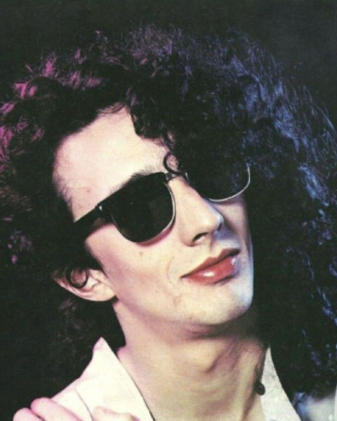
Rulos enormes y anteojos oscuros.
Peluca de rulos, lentes oscuros y camisa suelta.
Cantá: Mariposa Tecknicolor
Con lo que tenés en casa
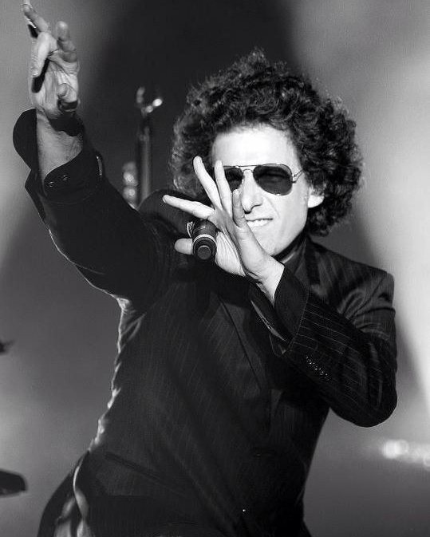
Rulos revueltos, anteojos de sol y traje negro.
Peluca de rulos, lentes oscuros, saco y camisa negros.
Cantá: Flaca
Con lo que tenés en casa
Pelado y anteojos redondos oscuros.
Pelada de látex o gorro color piel, lentes redondos y ropa negra.
Cantá: Ji Ji Ji
Con lo que tenés en casa
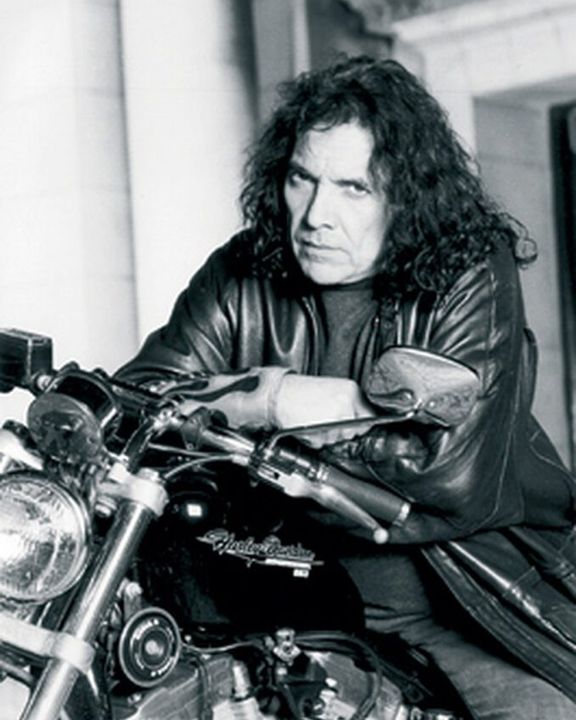
Melena, campera de cuero y moto.
Campera de cuero, peluca larga y guitarra.
Cantá: El Viejo
Con lo que tenés en casa
Virus: melena, camisa estampada y maquillaje.
Camisa estampada brillante, pelo largo y maquillaje suave.
Cantá: Wadu Wadu
Con lo que tenés en casa
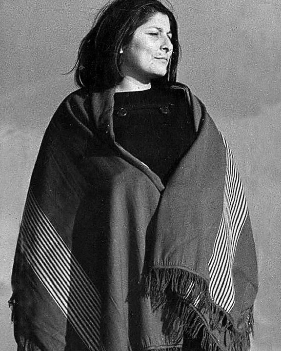
Poncho y pelo negro largo.
Poncho, peluca lisa negra y, si conseguís, un bombo.
Cantá: Gracias a la Vida
Con lo que tenés en casa
Camisa roja abierta, cadena y pelo negro con volumen.
Camisa abierta, cadena al pecho y patillas.
Cantá: Rosa, Rosa
Con lo que tenés en casa
Sombrero, traje y la sonrisa.
Traje, sombrero, corbata y pelo engominado.
Cantá: Volver
Con lo que tenés en casa
Vestido azul y corona de flores.
Vestido azul vaporoso, corona de flores y pelo largo oscuro.
Cantá: No Me Arrepiento de Este Amor
Comprando un par de cosas
Remera ajustada, cadena y pelo corto.
Remera ajustada o musculosa, cadena y un tatuaje pintado en el brazo.
Cantá: Lo Mejor del Amor
Con lo que tenés en casa
Gorra, anteojos de sol y teclado colgado.
Gorra, anteojos de sol, ropa deportiva y un teclado de juguete al hombro.
Cantá: Se Te Ve la Tanga
Con lo que tenés en casa
El poncho revoleando en el aire.
Poncho y ropa de campo. Revoleo obligatorio.
Cantá: Brindis
Con lo que tenés en casa
Traje oscuro y anteojos negros.
Traje negro, camisa oscura y anteojos negros.
Cantá: Los Caminos de la Vida
Con lo que tenés en casa
Trajes de lentejuelas doradas. Para ir en dúo.
Saco dorado brillante, medias de red y mucho pop.
Cantá: Don
Comprando un par de cosas
Conjunto dorado con flecos y pelo rojo.
Body o conjunto dorado con flecos y extensiones rojas.
Cantá: Soy
Comprando un par de cosas
Conjunto a cuadros, botas altas y trenzas.
Pollera a cuadros, botas altas, top y trenzas largas.
Cantá: Miénteme
Comprando un par de cosas
Todo azul, de pies a cabeza, y rodete alto.
Conjunto azul ajustado y dos rodetes o coleta alta.
Cantá: Automático
Comprando un par de cosas
Anteojos finos, tatuajes en la cara y campera de marca.
Anteojos finos de color, tatuajes pintados en la cara y campera.
Cantá: She Don't Give a Fo
Con lo que tenés en casa
Tiny Desk: gorro azul peludo y anteojos espejados, chaleco de corazones rojos que dicen te amo. Para ir en dúo.
Gorro peludo azul y remera estampada para uno; corazones rojos de tela y anteojos negros para el otro.
Cantá: Papota
Comprando un par de cosas
Gorra negra y anteojos negros grandes. No canta, pero se arma en un minuto.
Gorra, anteojos oscuros enormes y buzo.
Cantá: Shakira: Bzrp Music Sessions, Vol. 53
Con lo que tenés en casa
Para animarse
202 temas que nunca fallan en un karaoke, sacados de listas de los más cantados, con muchos de acá. Combiná los filtros como quieras.
Origen
Género
Década
202 temas
No hay temas con esa combinación. Probá sacando algún filtro.